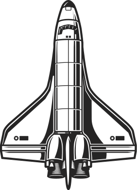

Кир Булычев
Марсианское зелье
Корнелий Удалов не решился один идти с жалобой в универмаг. Он спустился вниз, позвал на помощь соседа. Грубин, услыхав просьбу, долго хохотал, но не отказал и даже был польщен. Отодвинул микроскоп, закатал рисовое зернышко в мягкую бумагу, положил в ящик стола. Потом шагнул к трехсотлитровому самодельному аквариуму и взял наброшенный на него черный пиджак с блеском на локтях. Пиджаком Грубин спасал тропических рыбок от говорящего ворона. Ворон их пугал, болтал клювом в воде.
– Ты, Корнелий, не робей, – говорил Грубин, надевая пиджак поверх голубой застиранной майки. – В ракетостроении перекосов быть не должно. Ворон забил крыльями, запросился на волю, но Грубин его с собой не взял, напротив – сунул в шкаф, запер.
Удалов подхватил большой прозрачный мешок, в котором покоилась оказавшаяся дефектной красная пластиковая ракета на желтой пусковой установке, купленная в подарок сыну Максимке, пониже надвинул соломенную шляпу и первым направился к двери.
Кир Булычёв (настоящее имя — И́горь Все́володович Може́йко) — советский писатель-фантаст, драматург, сценарист, литературовед, историк, востоковед. Доктор исторических наук. Великий Гусляр Цикл о вымышленном городе Великий Гусляр (прототипом которого послужил Великий Устюг Вологодской области). В Гусляр наведываются инопланетяне, там множество странных жителей, там происходят необычайные события. И там же живут обычные нормальные люди, которым, из-за особенностей окружения, время от времени приходится решать совершенно неожиданные проблемы и даже в самых странных обстоятельствах оставаться прежде всего людьми. Произведения цикла написаны очень легко и с юмором, их приятно и неутомительно читать, при том, что в них нередко затрагиваются вполне серьёзные вопросы и проблемы. Гуслярский цикл содержит около семидесяти произведений, в нём семь повестей (некоторые из них в разное время издавались под разными названиями), остальное — рассказы. Произведения цикла создавались в течение почти тридцати пяти лет, начиная с 1967 года. Цикл рождался стихийно, оттого в ранних рассказах появляются герои-однодневки или герои, которые уезжают из города навсегда, но в следующих рассказах вдруг снова появляются. На карте вымышленного города постепенно появлялись новые объекты, и в середине 1990-х годов в журнале «Уральский следопыт» появилась карта города Великий Гусляр. Постепенно цикл рос, сейчас его повести и рассказы делят на восемь частей: «Чудеса в Гусляре», «Пришельцы в Гусляре», «Возвращение в Гусляр», «Гусляр-2000», «Господа гуслярцы», «Гусляр навеки», «Письма Ложкина» и «Рассказы из архива Кира Булычёва». Некоторые рассказы цикла в изданные сборники «Гуслярских хроник» не входят. В 1984 году на киностудии Мосфильм по повести «Марсианское зелье» был снят художественный фильм «Шанс». (Источник Википедия)
Купить книгу 